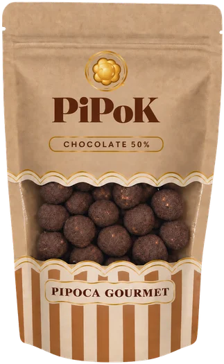
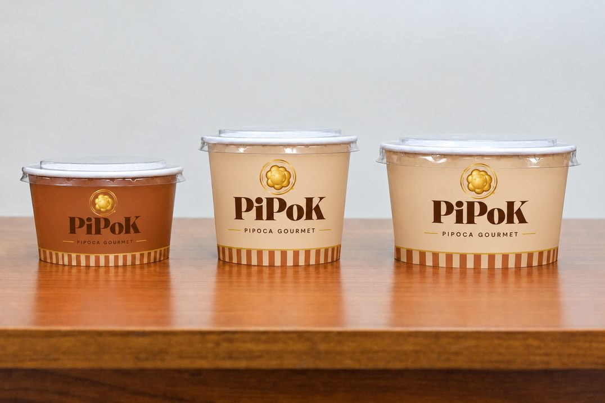
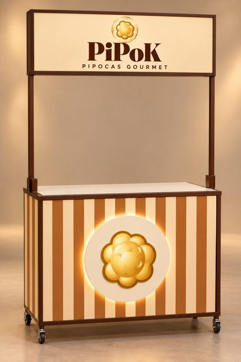
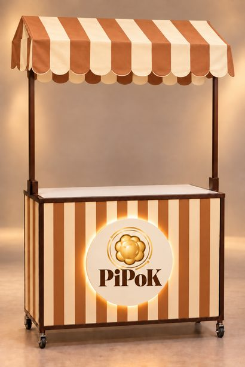

A pipoca que virou experiência gourmet.
Ingredientes selecionados, cobertura generosa e aquela crocância que faz voltar para mais uma. Pipok une o afeto da pipoca de sempre ao cuidado de um doce fino.
Gourmet, afetiva e premium.
A Pipok nasceu para tratar a pipoca com o carinho que ela merece: o mesmo sabor que lembra cinema, festa e casa, agora com acabamento elegante e ingredientes de qualidade.
Sabor
Cobertura de chocolate envolvendo cada pipoca, no ponto certo entre o doce e o intenso.
Crocância
Pipocas estouradas e finalizadas com cuidado para manter a textura crocante até o último grão.
Ingredientes selecionados
Escolhemos cada insumo pensando em qualidade, para uma pipoca gourmet e mais saudável.

Pipok Chocolate 50%
Pipoca gourmet coberta com chocolate 50% cacau. Um doce para dividir (ou não), que vai bem no lanche, no presente e na mesa de festa.
- Cobertura de chocolate 50% cacau
- Pipoca crocante, feita com ingredientes selecionados
- Embalagens em sachê e potes, prontas para presentear
Feita para encantar do pote à mesa.
As listras, o dourado e o ícone da pipoca estão em cada detalhe da embalagem, como nas pipocas de antigamente.



Onde encontrar a Pipok
Nossos carrinhos levam a Pipok para feiras, eventos e pontos de venda. Quer a Pipok na sua festa, empresa ou loja? Chame a gente no Instagram ou fale com a LB Food.